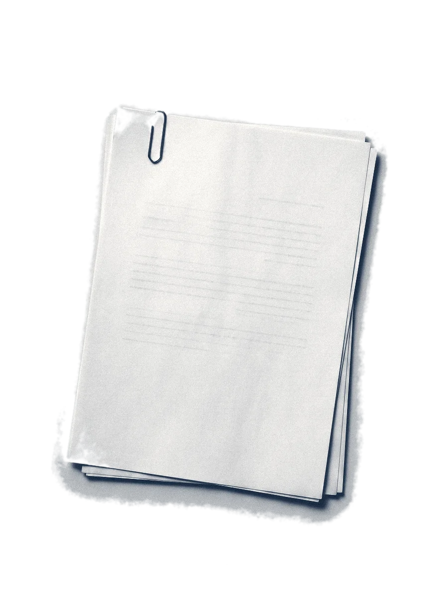

Curso de IA · Aula 1
Como funciona, como se mede e quem está no mercado.
imagem gerada por IA
Como funciona
A IA escreve uma palavra por vez
valores ilustrativos
Como funciona
Sem o contrato, a data é inventada
plausível e inventada
datas e valores ilustrativos
Como se mede
Benchmark, a mesma prova com gabarito
0 de 10
acertos na prova
ilustrativo
Como se mede
Arena, pessoas votam sem saber qual IA
A
modelo oculto
B
modelo oculto
[CONFERIR] mecanismo da arena
Mercado
Onde fica o dado do cliente
roda no servidor
de quem vende
pode rodar no servidor
do escritório
Também rodam no escritório: gpt-oss e Gemma.
[CONFERIR] lista e exceções, out/2026
Curso de IA · Aula 2
Como pedir, o que entregar e como guardar os dois.
imagem gerada por IA
Prompt e contexto
Prompt é o pedido; contexto é o material
Pedido
Redija a contestação. Ataque a prescrição.
Contexto



petição inicial
contrato
modelo do escritório
imagens geradas por IA
Skill
A skill guarda o pedido e o modelo
skill · contestação
SKILL.md
Redija a contestação. Ataque a prescrição.
referências
deste caso
imagens geradas por IA
[CONFERIR] Agent Skills
Pasta do caso
Os autos vão para a pasta do caso

imagem gerada por IA
estrutura ilustrativa · [CONFERIR] Agent Skills
Revisão
Cada linha aponta para um documento
minuta.md
O contrato foi firmado em 12/03/2019 (caso fictício).
A ação veio depois do prazo prescricional.
O tribunal decide assim em casos iguais.
sem fonte: conferir
Requer-se o reconhecimento da prescrição.
Demonstração
Funcionando, num caso fictício
o pedido curto abriu a skill
a data veio de autos/contrato.pdf
Vídeo de exemplo feito por código, sobre um caso fictício. Nenhum dado real.